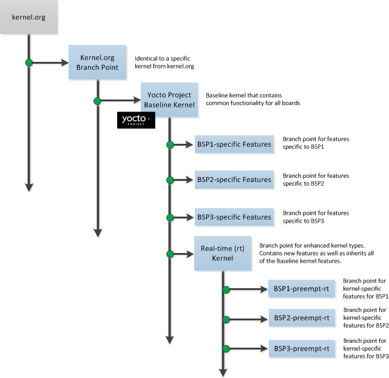

Copyright © 2010-2017 Linux Foundation
Permission is granted to copy, distribute and/or modify this document under the terms of the Creative Commons Attribution-Share Alike 2.0 UK: England & Wales as published by Creative Commons.
For the latest version of the Yocto Project Linux Kernel Development Manual associated with this Yocto Project release (version 2.3), see the Yocto Project Linux Kernel Development Manual from the Yocto Project documentation page.
This version of the manual is version 2.3. For later releases of the Yocto Project (if they exist), go to the Yocto Project documentation page and use the drop-down "Active Releases" button and choose the Yocto Project version for which you want the manual.
For an in-development version of the Yocto Project Linux Kernel Development Manual, see http://www.yoctoproject.org/docs/latest/kernel-dev/kernel-dev.html.
| Revision History | |
|---|---|
| Revision 1.4 | April 2013 |
| Released with the Yocto Project 1.4 Release. | |
| Revision 1.5 | October 2013 |
| Released with the Yocto Project 1.5 Release. | |
| Revision 1.5.1 | January 2014 |
| Released with the Yocto Project 1.5.1 Release. | |
| Revision 1.6 | April 2014 |
| Released with the Yocto Project 1.6 Release. | |
| Revision 1.7 | October 2014 |
| Released with the Yocto Project 1.7 Release. | |
| Revision 1.8 | April 2015 |
| Released with the Yocto Project 1.8 Release. | |
| Revision 2.0 | October 2015 |
| Released with the Yocto Project 2.0 Release. | |
| Revision 2.1 | April 2016 |
| Released with the Yocto Project 2.1 Release. | |
| Revision 2.2 | October 2016 |
| Released with the Yocto Project 2.2 Release. | |
| Revision 2.3 | May 2017 |
| Released with the Yocto Project 2.3 Release. | |
Table of Contents
Table of Contents
Regardless of how you intend to make use of the Yocto Project, chances are you will work with the Linux kernel. This manual provides background information on the Yocto Linux kernel Metadata, describes common tasks you can perform using the kernel tools, and shows you how to use the kernel Metadata needed to work with the kernel inside the Yocto Project.
Each Yocto Project release has a set of linux-yocto recipes, whose
Git repositories you can view in the Yocto
Source Repositories under
the "Yocto Linux Kernel" heading.
New recipes for the release track the latest upstream developments
and introduce newly-supported platforms.
Previous recipes in the release are refreshed and supported for at
least one additional release.
As they align, these previous releases are updated to include the
latest from the
Long Term Support Initiative
(LTSI) project.
Also included is a linux-yocto development recipe
(linux-yocto-dev.bb) should you want to work
with the very latest in upstream Linux kernel development and
kernel Metadata development.
The Yocto Project also provides a powerful set of kernel tools for managing Linux kernel sources and configuration data. You can use these tools to make a single configuration change, apply multiple patches, or work with your own kernel sources.
In particular, the kernel tools allow you to generate configuration
fragments that specify only what you must, and nothing more.
Configuration fragments only need to contain the highest level
visible CONFIG options as presented by the Linux
kernel menuconfig system.
Contrast this against a complete Linux kernel
.config, which includes all the automatically
selected CONFIG options.
This efficiency reduces your maintenance effort and allows you
to further separate your configuration in ways that make sense for
your project.
A common split separates policy and hardware.
For example, all your kernels might support
the proc and sys filesystems,
but only specific boards require sound, USB, or specific drivers.
Specifying these configurations individually allows you to aggregate
them together as needed, but maintains them in only one place.
Similar logic applies to separating source changes.
If you do not maintain your own kernel sources and need to make only minimal changes to the sources, the released recipes provide a vetted base upon which to layer your changes. Doing so allows you to benefit from the continual kernel integration and testing performed during development of the Yocto Project.
If, instead, you have a very specific Linux kernel source tree and are unable to align with one of the official linux-yocto recipes, an alternative exists by which you can use the Yocto Project Linux kernel tools with your own kernel sources.
The sections that follow provide instructions for completing specific Linux kernel development tasks. These instructions assume you are comfortable working with BitBake recipes and basic open-source development tools. Understanding these concepts will facilitate the process of working with the kernel recipes. If you find you need some additional background, please be sure to review and understand the following documentation:
The "Modifying Source Code" section in the Yocto Project Development Manual
The "Understanding and Creating Layers" section in the Yocto Project Development Manual
The "Modifying the Kernel" section in the Yocto Project Development Manual.
Finally, while this document focuses on the manual creation of recipes, patches, and configuration files, the Yocto Project Board Support Package (BSP) tools are available to automate this process with existing content and work well to create the initial framework and boilerplate code. For details on these tools, see the "Using the Yocto Project's BSP Tools" section in the Yocto Project Board Support Package (BSP) Developer's Guide.
Table of Contents
This chapter presents several common tasks you perform when you work with the Yocto Project Linux kernel. These tasks include preparing a layer, modifying an existing recipe, iterative development, working with your own sources, and incorporating out-of-tree modules.
If you are going to be modifying kernel recipes, it is recommended
that you create and prepare your own layer in which to do your
work.
Your layer contains its own
BitBake
append files
(.bbappend) and provides a convenient
mechanism to create your own recipe files
(.bb).
For details on how to create and work with layers, see the following
sections in the Yocto Project Development Manual:
"Understanding and Creating Layers" for general information on layers and how to create layers.
"Set Up Your Layer for the Build" for specific instructions on setting up a layer for kernel development.
In many cases, you can customize an existing linux-yocto recipe to
meet the needs of your project.
Each release of the Yocto Project provides a few Linux
kernel recipes from which you can choose.
These are located in the
Source Directory
in meta/recipes-kernel/linux.
Modifying an existing recipe can consist of the following:
Creating the append file
Applying patches
Changing the configuration
Before modifying an existing recipe, be sure that you have created a minimal, custom layer from which you can work. See the "Creating and Preparing a Layer" section for some general resources. You can also see the "Set Up Your Layer for the Build" section of the Yocto Project Development Manual for a detailed example.
You create this file in your custom layer.
You also name it accordingly based on the linux-yocto recipe
you are using.
For example, if you are modifying the
meta/recipes-kernel/linux/linux-yocto_4.4.bb
recipe, the append file will typically be located as follows
within your custom layer:
your-layer/recipes-kernel/linux/linux-yocto_4.4.bbappend
The append file should initially extend the
FILESPATH
search path by prepending the directory that contains your
files to the
FILESEXTRAPATHS
variable as follows:
FILESEXTRAPATHS_prepend := "${THISDIR}/${PN}:"
The path ${THISDIR}/${PN}
expands to "linux-yocto" in the current directory for this
example.
If you add any new files that modify the kernel recipe and you
have extended FILESPATH as
described above, you must place the files in your layer in the
following area:
your-layer/recipes-kernel/linux/linux-yocto/
As an example, consider the following append file
used by the BSPs in meta-yocto-bsp:
meta-yocto-bsp/recipes-kernel/linux/linux-yocto_4.4.bbappend
The following listing shows the file.
Be aware that the actual commit ID strings in this
example listing might be different than the actual strings
in the file from the meta-yocto-bsp
layer upstream.
KBRANCH_genericx86 = "standard/base"
KBRANCH_genericx86-64 = "standard/base"
KMACHINE_genericx86 ?= "common-pc"
KMACHINE_genericx86-64 ?= "common-pc-64"
KBRANCH_edgerouter = "standard/edgerouter"
KBRANCH_beaglebone = "standard/beaglebone"
KBRANCH_mpc8315e-rdb = "standard/fsl-mpc8315e-rdb"
SRCREV_machine_genericx86 ?= "ad8b1d659ddd2699ebf7d50ef9de8940b157bfc2"
SRCREV_machine_genericx86-64 ?= "ad8b1d659ddd2699ebf7d50ef9de8940b157bfc2"
SRCREV_machine_edgerouter ?= "cebe1ad56aebd89e0de29412e19433fb441bf13c"
SRCREV_machine_beaglebone ?= "cebe1ad56aebd89e0de29412e19433fb441bf13c"
SRCREV_machine_mpc8315e-rdb ?= "06c0dbdcba374ca7f92a53d69292d6bb7bc9b0f3"
COMPATIBLE_MACHINE_genericx86 = "genericx86"
COMPATIBLE_MACHINE_genericx86-64 = "genericx86-64"
COMPATIBLE_MACHINE_edgerouter = "edgerouter"
COMPATIBLE_MACHINE_beaglebone = "beaglebone"
COMPATIBLE_MACHINE_mpc8315e-rdb = "mpc8315e-rdb"
LINUX_VERSION_genericx86 = "4.4.41"
LINUX_VERSION_genericx86-64 = "4.4.41"
LINUX_VERSION_edgerouter = "4.4.53"
LINUX_VERSION_beaglebone = "4.4.53"
LINUX_VERSION_mpc8315e-rdb = "4.4.53"
This append file contains statements used to support
several BSPs that ship with the Yocto Project.
The file defines machines using the
COMPATIBLE_MACHINE
variable and uses the
KMACHINE
variable to ensure the machine name used by the OpenEmbedded
build system maps to the machine name used by the Linux Yocto
kernel.
The file also uses the optional
KBRANCH
variable to ensure the build process uses the
appropriate kernel branch.
Although this particular example does not use it, the
KERNEL_FEATURES
variable could be used to enable features specific to
the kernel.
The append file points to specific commits in the
Source Directory
Git repository and the meta Git repository
branches to identify the exact kernel needed to build the
BSP.
One thing missing in this particular BSP, which you will
typically need when developing a BSP, is the kernel configuration
file (.config) for your BSP.
When developing a BSP, you probably have a kernel configuration
file or a set of kernel configuration files that, when taken
together, define the kernel configuration for your BSP.
You can accomplish this definition by putting the configurations
in a file or a set of files inside a directory located at the
same level as your kernel's append file and having the same
name as the kernel's main recipe file.
With all these conditions met, simply reference those files in the
SRC_URI
statement in the append file.
For example, suppose you had some configuration options
in a file called network_configs.cfg.
You can place that file inside a directory named
linux-yocto and then add
a SRC_URI statement such as the
following to the append file.
When the OpenEmbedded build system builds the kernel, the
configuration options are picked up and applied.
SRC_URI += "file://network_configs.cfg"
To group related configurations into multiple files, you
perform a similar procedure.
Here is an example that groups separate configurations
specifically for Ethernet and graphics into their own
files and adds the configurations by using a
SRC_URI statement like the following
in your append file:
SRC_URI += "file://myconfig.cfg \
file://eth.cfg \
file://gfx.cfg"
Another variable you can use in your kernel recipe append
file is the
FILESEXTRAPATHS
variable.
When you use this statement, you are extending the locations
used by the OpenEmbedded system to look for files and
patches as the recipe is processed.
Other methods exist to accomplish grouping and defining configuration options.
For example, if you are working with a local clone of the kernel repository,
you could checkout the kernel's meta branch, make your changes,
and then push the changes to the local bare clone of the kernel.
The result is that you directly add configuration options to the
meta branch for your BSP.
The configuration options will likely end up in that location anyway if the BSP gets
added to the Yocto Project.
In general, however, the Yocto Project maintainers take care of moving the
SRC_URI-specified
configuration options to the kernel's meta branch.
Not only is it easier for BSP developers to not have to worry about putting those
configurations in the branch, but having the maintainers do it allows them to apply
'global' knowledge about the kinds of common configuration options multiple BSPs in
the tree are typically using.
This allows for promotion of common configurations into common features.
If you have a single patch or a small series of patches
that you want to apply to the Linux kernel source, you
can do so just as you would with any other recipe.
You first copy the patches to the path added to
FILESEXTRAPATHS
in your .bbappend file as described in
the previous section, and then reference them in
SRC_URI
statements.
For example, you can apply a three-patch series by adding the
following lines to your linux-yocto
.bbappend file in your layer:
SRC_URI += "file://0001-first-change.patch"
SRC_URI += "file://0002-second-change.patch"
SRC_URI += "file://0003-third-change.patch"
The next time you run BitBake to build the Linux kernel, BitBake detects the change in the recipe and fetches and applies the patches before building the kernel.
For a detailed example showing how to patch the kernel, see the "Patching the Kernel" section in the Yocto Project Development Manual.
You can make wholesale or incremental changes to the final
.config file used for the eventual
Linux kernel configuration by including a
defconfig file and by specifying
configuration fragments in the
SRC_URI
to be applied to that file.
If you have a complete, working Linux kernel
.config
file you want to use for the configuration, as before, copy
that file to the appropriate ${PN}
directory in your layer's
recipes-kernel/linux directory,
and rename the copied file to "defconfig".
Then, add the following lines to the linux-yocto
.bbappend file in your layer:
FILESEXTRAPATHS_prepend := "${THISDIR}/${PN}:"
SRC_URI += "file://defconfig"
The SRC_URI tells the build system how to
search for the file, while the
FILESEXTRAPATHS
extends the
FILESPATH
variable (search directories) to include the
${PN} directory you created to hold the
configuration changes.
defconfig file before applying any
subsequent configuration fragments.
The final kernel configuration is a combination of the
configurations in the defconfig file and
any configuration fragments you provide.
You need to realize that if you have any configuration
fragments, the build system applies these on top of and
after applying the existing defconfig
file configurations.
Generally speaking, the preferred approach is to determine the
incremental change you want to make and add that as a
configuration fragment.
For example, if you want to add support for a basic serial
console, create a file named 8250.cfg in
the ${PN} directory with the following
content (without indentation):
CONFIG_SERIAL_8250=y
CONFIG_SERIAL_8250_CONSOLE=y
CONFIG_SERIAL_8250_PCI=y
CONFIG_SERIAL_8250_NR_UARTS=4
CONFIG_SERIAL_8250_RUNTIME_UARTS=4
CONFIG_SERIAL_CORE=y
CONFIG_SERIAL_CORE_CONSOLE=y
Next, include this configuration fragment and extend the
FILESPATH variable in your
.bbappend file:
FILESEXTRAPATHS_prepend := "${THISDIR}/${PN}:"
SRC_URI += "file://8250.cfg"
The next time you run BitBake to build the Linux kernel, BitBake detects the change in the recipe and fetches and applies the new configuration before building the kernel.
For a detailed example showing how to configure the kernel, see the "Configuring the Kernel" section in the Yocto Project Development Manual.
defconfig File¶
It might be desirable to have kernel configuration fragment
support through a defconfig file that
is pulled from the kernel source tree for the configured
machine.
By default, the OpenEmbedded build system looks for
defconfig files in the layer used for
Metadata, which is "out-of-tree", and then configures them
using the following:
SRC_URI += "file://defconfig"
If you do not want to maintain copies of
defconfig files in your layer but would
rather allow users to use the default configuration from the
kernel tree and still be able to add configuration fragments
to the
SRC_URI
through, for example, append files, you can direct the
OpenEmbedded build system to use a
defconfig file that is "in-tree".
To specify an "in-tree" defconfig file,
edit the recipe that builds your kernel so that it has the
following command form:
KBUILD_DEFCONFIG_KMACHINE ?= defconfig_file
You need to append the variable with
KMACHINE
and then supply the path to your "in-tree"
defconfig file.
Aside from modifying your kernel recipe and providing your own
defconfig file, you need to be sure no
files or statements set SRC_URI to use a
defconfig other than your "in-tree"
file (e.g. a kernel's linux-machine.inc
file).
In other words, if the build system detects a statement
that identifies an "out-of-tree"
defconfig file, that statement
will override your
KBUILD_DEFCONFIG variable.
See the
KBUILD_DEFCONFIG
variable description for more information.
If you do not have existing patches or configuration files, you can iteratively generate them from within the BitBake build environment as described within this section. During an iterative workflow, running a previously completed BitBake task causes BitBake to invalidate the tasks that follow the completed task in the build sequence. Invalidated tasks rebuild the next time you run the build using BitBake.
As you read this section, be sure to substitute the name of your Linux kernel recipe for the term "linux-yocto".
If kernel images are being built with "-dirty" on the end of the version string, this simply means that modifications in the source directory have not been committed.
$ git status
You can use the above Git command to report modified, removed, or added files. You should commit those changes to the tree regardless of whether they will be saved, exported, or used. Once you commit the changes, you need to rebuild the kernel.
To force a pickup and commit of all such pending changes, enter the following:
$ git add .
$ git commit -s -a -m "getting rid of -dirty"
Next, rebuild the kernel.
You can manipulate the .config file
used to build a linux-yocto recipe with the
menuconfig command as follows:
$ bitbake linux-yocto -c menuconfig
This command starts the Linux kernel configuration tool,
which allows you to prepare a new
.config file for the build.
When you exit the tool, be sure to save your changes
at the prompt.
The resulting .config file is
located in the build directory,
${B},
which expands to
${WORKDIR}/linux-${PACKAGE_ARCH}-${LINUX_KERNEL_TYPE}-build.
You can use the entire .config file as the
defconfig file as described in the
"Changing the Configuration" section.
For more information on the .config file,
see the
"Using menuconfig"
section in the Yocto Project Development Manual.
bitbake -e
command:
$ bitbake -e virtual/kernel
Search the output for the variable in which you are
interested to see exactly how it is expanded and used.
A better method is to create a configuration fragment using the
differences between two configuration files: one previously
created and saved, and one freshly created using the
menuconfig tool.
To create a configuration fragment using this method, follow these steps:
Complete a build at least through the kernel configuration task as follows:
$ bitbake linux-yocto -c kernel_configme -f
This step ensures that you will be creating a
.config file from a known state.
Because situations exist where your build state might
become unknown, it is best to run the previous
command prior to starting up
menuconfig.
Run the menuconfig
command:
$ bitbake linux-yocto -c menuconfig
Run the diffconfig
command to prepare a configuration fragment.
The resulting file fragment.cfg
will be placed in the
${WORKDIR} directory:
$ bitbake linux-yocto -c diffconfig
The diffconfig command creates a file that is a
list of Linux kernel CONFIG_ assignments.
See the "Changing the Configuration"
section for information on how to use the output as a
configuration fragment.
The kernel tools also provide configuration validation.
You can use these tools to produce warnings for when a
requested configuration does not appear in the final
.config file or when you override a
policy configuration in a hardware configuration fragment.
Here is an example with some sample output of the command
that runs these tools:
$ bitbake linux-yocto -c kernel_configcheck -f
...
NOTE: validating kernel configuration
This BSP sets 3 invalid/obsolete kernel options.
These config options are not offered anywhere within this kernel.
The full list can be found in your kernel src dir at:
meta/cfg/standard/mybsp/invalid.cfg
This BSP sets 21 kernel options that are possibly non-hardware related.
The full list can be found in your kernel src dir at:
meta/cfg/standard/mybsp/specified_non_hdw.cfg
WARNING: There were 2 hardware options requested that do not
have a corresponding value present in the final ".config" file.
This probably means you are not getting the config you wanted.
The full list can be found in your kernel src dir at:
meta/cfg/standard/mybsp/mismatch.cfg
The output describes the various problems that you can
encounter along with where to find the offending configuration
items.
You can use the information in the logs to adjust your
configuration files and then repeat the
kernel_configme and
kernel_configcheck commands until
they produce no warnings.
For more information on how to use the
menuconfig tool, see the
"Using menuconfig"
section in the Yocto Project Development Manual.
You can experiment with source code changes and create a simple patch without leaving the BitBake environment. To get started, be sure to complete a build at least through the kernel configuration task:
$ bitbake linux-yocto -c kernel_configme -f
Taking this step ensures you have the sources prepared
and the configuration completed.
You can find the sources in the build directory within the
source/ directory, which is a symlink
(i.e. ${B}/source).
The source/ directory expands to
${WORKDIR}/linux-${PACKAGE_ARCH}-${LINUX_KERNEL_TYPE}-build/source.
The directory pointed to by the
source/ symlink is also known as
${STAGING_KERNEL_DIR}.
You can edit the sources as you would any other Linux source
tree.
However, keep in mind that you will lose changes if you
trigger the
do_fetch
task for the recipe.
You can avoid triggering this task by not using BitBake to
run the
cleanall,
cleansstate,
or forced
fetch
commands.
Also, do not modify the recipe itself while working
with temporary changes or BitBake might run the
fetch command depending on the
changes to the recipe.
To test your temporary changes, instruct BitBake to run the
compile again.
The -f option forces the command to run
even though BitBake might think it has already done so:
$ bitbake linux-yocto -c compile -f
If the compile fails, you can update the sources and repeat
the compile.
Once compilation is successful, you can inspect and test
the resulting build (i.e. kernel, modules, and so forth) from
the following build directory:
${WORKDIR}/linux-${PACKAGE_ARCH}-${LINUX_KERNEL_TYPE}-build
Alternatively, you can run the deploy
command to place the kernel image in the
tmp/deploy/images directory:
$ bitbake linux-yocto -c deploy
And, of course, you can perform the remaining installation and packaging steps by issuing:
$ bitbake linux-yocto
For rapid iterative development, the edit-compile-repeat loop described in this section is preferable to rebuilding the entire recipe because the installation and packaging tasks are very time consuming.
Once you are satisfied with your source code modifications,
you can make them permanent by generating patches and
applying them to the
SRC_URI
statement as described in the
"Applying Patches"
section.
If you are not familiar with generating patches, refer to the
"Creating the Patch"
section in the Yocto Project Development Manual.
If you cannot work with one of the Linux kernel versions supported by existing linux-yocto recipes, you can still make use of the Yocto Project Linux kernel tooling by working with your own sources. When you use your own sources, you will not be able to leverage the existing kernel Metadata and stabilization work of the linux-yocto sources. However, you will be able to manage your own Metadata in the same format as the linux-yocto sources. Maintaining format compatibility facilitates converging with linux-yocto on a future, mutually-supported kernel version.
To help you use your own sources, the Yocto Project provides a
linux-yocto custom recipe
(linux-yocto-custom.bb) that uses
kernel.org sources
and the Yocto Project Linux kernel tools for managing
kernel Metadata.
You can find this recipe in the
poky Git repository of the
Yocto Project Source Repository
at:
poky/meta-skeleton/recipes-kernel/linux/linux-yocto-custom.bb
Here are some basic steps you can use to work with your own sources:
Copy the linux-yocto-custom.bb
recipe to your layer and give it a meaningful name.
The name should include the version of the Linux kernel you
are using (e.g.
linux-yocto-myproject_3.19.bb,
where "3.19" is the base version of the Linux kernel
with which you would be working).
In the same directory inside your layer,
create a matching directory
to store your patches and configuration files (e.g.
linux-yocto-myproject).
Make sure you have either a
defconfig file or configuration
fragment files.
When you use the linux-yocto-custom.bb
recipe, you must specify a configuration.
If you do not have a defconfig file,
you can run the following:
$ make defconfig
After running the command, copy the resulting
.config to the
files directory as "defconfig" and
then add it to the
SRC_URI
variable in the recipe.
Running the make defconfig
command results in the default configuration for your
architecture as defined by your kernel.
However, no guarantee exists that this configuration is
valid for your use case, or that your board will even boot.
This is particularly true for non-x86 architectures.
To use non-x86 defconfig files, you
need to be more specific and find one that matches your
board (i.e. for arm, you look in
arch/arm/configs and use the one that
is the best starting point for your board).
Edit the following variables in your recipe as appropriate for your project:
SRC_URI:
The SRC_URI should specify
a Git repository that uses one of the supported Git
fetcher protocols (i.e. file,
git, http,
and so forth).
The SRC_URI variable should
also specify either a defconfig
file or some configuration fragment files.
The skeleton recipe provides an example
SRC_URI as a syntax reference.
LINUX_VERSION:
The Linux kernel version you are using (e.g.
"3.19").
LINUX_VERSION_EXTENSION:
The Linux kernel CONFIG_LOCALVERSION
that is compiled into the resulting kernel and visible
through the uname command.
SRCREV:
The commit ID from which you want to build.
PR:
Treat this variable the same as you would in any other
recipe.
Increment the variable to indicate to the OpenEmbedded
build system that the recipe has changed.
PV:
The default PV assignment is
typically adequate.
It combines the LINUX_VERSION
with the Source Control Manager (SCM) revision
as derived from the
SRCPV
variable.
The combined results are a string with
the following form:
3.19.11+git1+68a635bf8dfb64b02263c1ac80c948647cc76d5f_1+218bd8d2022b9852c60d32f0d770931e3cf343e2
While lengthy, the extra verbosity in PV
helps ensure you are using the exact
sources from which you intend to build.
COMPATIBLE_MACHINE:
A list of the machines supported by your new recipe.
This variable in the example recipe is set
by default to a regular expression that matches
only the empty string, "(^$)".
This default setting triggers an explicit build
failure.
You must change it to match a list of the machines
that your new recipe supports.
For example, to support the qemux86
and qemux86-64 machines, use
the following form:
COMPATIBLE_MACHINE = "qemux86|qemux86-64"
Provide further customizations to your recipe as needed just as you would customize an existing linux-yocto recipe. See the "Modifying an Existing Recipe" section for information.
This section describes steps to build out-of-tree modules on your target and describes how to incorporate out-of-tree modules in the build.
While the traditional Yocto Project development model would be to include kernel modules as part of the normal build process, you might find it useful to build modules on the target. This could be the case if your target system is capable and powerful enough to handle the necessary compilation. Before deciding to build on your target, however, you should consider the benefits of using a proper cross-development environment from your build host.
If you want to be able to build out-of-tree modules on
the target, there are some steps you need to take
on the target that is running your SDK image.
Briefly, the kernel-dev package
is installed by default on all
*.sdk images and the
kernel-devsrc package is installed
on many of the *.sdk images.
However, you need to create some scripts prior to
attempting to build the out-of-tree modules on the target
that is running that image.
Prior to attempting to build the out-of-tree modules,
you need to be on the target as root and you need to
change to the /usr/src/kernel directory.
Next, make the scripts:
# cd /usr/src/kernel
# make scripts
Because all SDK image recipes include
dev-pkgs, the
kernel-dev packages will be installed
as part of the SDK image and the
kernel-devsrc packages will be installed
as part of applicable SDK images.
The SDK uses the scripts when building out-of-tree
modules.
Once you have switched to that directory and created the
scripts, you should be able to build your out-of-tree modules
on the target.
While it is always preferable to work with sources integrated
into the Linux kernel sources, if you need an external kernel
module, the hello-mod.bb recipe is
available as a template from which you can create your
own out-of-tree Linux kernel module recipe.
This template recipe is located in the
poky Git repository of the
Yocto Project Source Repository
at:
poky/meta-skeleton/recipes-kernel/hello-mod/hello-mod_0.1.bb
To get started, copy this recipe to your layer and give it a
meaningful name (e.g. mymodule_1.0.bb).
In the same directory, create a new directory named
files where you can store any source files,
patches, or other files necessary for building
the module that do not come with the sources.
Finally, update the recipe as needed for the module.
Typically, you will need to set the following variables:
Depending on the build system used by the module sources,
you might need to make some adjustments.
For example, a typical module Makefile
looks much like the one provided with the
hello-mod template:
obj-m := hello.o
SRC := $(shell pwd)
all:
$(MAKE) -C $(KERNEL_SRC) M=$(SRC)
modules_install:
$(MAKE) -C $(KERNEL_SRC) M=$(SRC) modules_install
...
The important point to note here is the
KERNEL_SRC
variable.
The
module
class sets this variable and the
KERNEL_PATH
variable to
${
with the necessary Linux kernel build information to build
modules.
If your module STAGING_KERNEL_DIR}Makefile uses a different
variable, you might want to override the
do_compile()
step, or create a patch to
the Makefile to work with the more typical
KERNEL_SRC or
KERNEL_PATH variables.
After you have prepared your recipe, you will likely want to include the module in your images. To do this, see the documentation for the following variables in the Yocto Project Reference Manual and set one of them appropriately for your machine configuration file:
Modules are often not required for boot and can be excluded from certain build configurations. The following allows for the most flexibility:
MACHINE_EXTRA_RRECOMMENDS += "kernel-module-mymodule"
The value is derived by appending the module filename without
the .ko extension to the string
"kernel-module-".
Because the variable is
RRECOMMENDS
and not a
RDEPENDS
variable, the build will not fail if this module is not
available to include in the image.
A common question when working with a kernel is: "What changes have been applied to this tree?" Rather than using "grep" across directories to see what has changed, you can use Git to inspect or search the kernel tree. Using Git is an efficient way to see what has changed in the tree.
Following are a few examples that show how to use Git commands to examine changes. These examples are by no means the only way to see changes.
kernel.org history is blended
with Yocto Project kernel changes.
You can form ranges by using branch names from the
kernel tree as the upper and lower commit markers with
the Git commands.
You can see the branch names through the web interface
to the Yocto Project source repositories at
http://git.yoctoproject.org/cgit.cgi.
To see a full range of the changes, use the
git whatchanged command and specify a
commit range for the branch
(commit..commit).
Here is an example that looks at what has changed in the
emenlow branch of the
linux-yocto-3.19 kernel.
The lower commit range is the commit associated with the
standard/base branch, while
the upper commit range is the commit associated with the
standard/emenlow branch.
$ git whatchanged origin/standard/base..origin/standard/emenlow
To see short, one line summaries of changes use the
git log command:
$ git log --oneline origin/standard/base..origin/standard/emenlow
Use this command to see code differences for the changes:
$ git diff origin/standard/base..origin/standard/emenlow
Use this command to see the commit log messages and the text differences:
$ git show origin/standard/base..origin/standard/emenlow
Use this command to create individual patches for
each change.
Here is an example that that creates patch files for each
commit and places them in your Documents
directory:
$ git format-patch -o $HOME/Documents origin/standard/base..origin/standard/emenlow
Tags in the Yocto Project kernel tree divide changes for
significant features or branches.
The git show tag
command shows changes based on a tag.
Here is an example that shows systemtap
changes:
$ git show systemtap
You can use the
git branch --contains tag
command to show the branches that contain a particular feature.
This command shows the branches that contain the
systemtap feature:
$ git branch --contains systemtap
You can add kernel features in the
recipe-space by
using the
KERNEL_FEATURES
variable and by specifying the feature's .scc
file path in the
SRC_URI
statement.
When you add features using this method, the OpenEmbedded build
system checks to be sure the features are present.
If the features are not present, the build stops.
Kernel features are the last elements processed for configuring
and patching the kernel.
Therefore, adding features in this manner is a way
to enforce specific features are present and enabled
without needing to do a full audit of any other layer's additions
to the SRC_URI statement.
You add a kernel feature by providing the feature as part of the
KERNEL_FEATURES variable and by providing the
path to the feature's .scc file, which is
relative to the root of the kernel Metadata.
The OpenEmbedded build system searches all forms of kernel
Metadata on the SRC_URI statement regardless
of whether the Metadata is in the "kernel-cache", system kernel
Metadata, or a recipe-space Metadata.
See the
"Kernel Metadata Location"
section for additional information.
When you specify the feature's .scc file
on the SRC_URI statement, the OpenEmbedded
build system adds the directory of that
.scc file along with all its subdirectories
to the kernel feature search path.
Because subdirectories are searched, you can reference a single
.scc file in the
SRC_URI statement to reference multiple kernel
features.
Consider the following example that adds the "test.scc" feature to the build.
Create a .scc file and locate it
just as you would any other patch file,
.cfg file, or fetcher item
you specify in the SRC_URI
statement.
You must add the directory of the
.scc file to the fetcher's
search path in the same manner as you would
add a .patch file.
You can create additional
.scc files beneath the
directory that contains the file you are
adding.
All subdirectories are searched during the
build as potential feature directories.
Continuing with the example, suppose the "test.scc"
feature you are adding has a
test.scc file in the following
directory:
my_recipe
|
+-linux-yocto
|
+-test.cfg
+-test.scc
In this example, the linux-yocto
directory has both the feature
test.scc file and a similarly
named configuration fragment file
test.cfg.
Add the .scc file to the
recipe's SRC_URI statement:
SRC_URI_append = " file://test.scc"
The leading space before the path is important as the path is appended to the existing path.
Specify the feature as a kernel feature:
KERNEL_FEATURES_append = " test.scc"
The OpenEmbedded build system processes the kernel feature when it builds the kernel.
test.scc file.
Table of Contents
In addition to supporting configuration fragments and patches, the
Yocto Project kernel tools also support rich
Metadata that you can
use to define complex policies and Board Support Package (BSP) support.
The purpose of the Metadata and the tools that manage it, known as
the kern-tools (kern-tools-native_git.bb), is
to help you manage the complexity of the configuration and sources
used to support multiple BSPs and Linux kernel types.
The kernel sources in the Yocto Project contain kernel Metadata, which
is located in the meta branches of the kernel
source Git repositories.
This Metadata defines Board Support Packages (BSPs) that
correspond to definitions in linux-yocto recipes for the same BSPs.
A BSP consists of an aggregation of kernel policy and enabled
hardware-specific features.
The BSP can be influenced from within the linux-yocto recipe.
linux-yocto.inc include file is said to be a
"linux-yocto style" recipe.
Every linux-yocto style recipe must define the
KMACHINE
variable.
This variable is typically set to the same value as the
MACHINE
variable, which is used by
BitBake.
However, in some cases, the variable might instead refer to the
underlying platform of the MACHINE.
Multiple BSPs can reuse the same KMACHINE
name if they are built using the same BSP description.
The "ep108-zynqmp" and "qemuzynqmp" BSP combination
in the meta-xilinx
layer is a good example of two BSPs using the same
KMACHINE value (i.e. "zynqmp").
See the BSP Descriptions section
for more information.
Every linux-yocto style recipe must also indicate the Linux kernel
source repository branch used to build the Linux kernel.
The KBRANCH
variable must be set to indicate the branch.
KBRANCH value to define an
alternate branch typically with a machine override as shown here
from the meta-emenlow layer:
KBRANCH_emenlow-noemgd = "standard/base"
The linux-yocto style recipes can optionally define the following variables:
KERNEL_FEATURES
LINUX_KERNEL_TYPE
LINUX_KERNEL_TYPE
defines the kernel type to be
used in assembling the configuration.
If you do not specify a LINUX_KERNEL_TYPE,
it defaults to "standard".
Together with
KMACHINE,
LINUX_KERNEL_TYPE defines the search
arguments used by the kernel tools to find the
appropriate description within the kernel Metadata with which to
build out the sources and configuration.
The linux-yocto recipes define "standard", "tiny", and "preempt-rt"
kernel types.
See the "Kernel Types" section
for more information on kernel types.
During the build, the kern-tools search for the BSP description
file that most closely matches the KMACHINE
and LINUX_KERNEL_TYPE variables passed in from the
recipe.
The tools use the first BSP description it finds that match
both variables.
If the tools cannot find a match, they issue a warning such as
the following:
WARNING: Can't find any BSP hardware or required configuration fragments.
WARNING: Looked at meta/cfg/broken/emenlow-broken/hdw_frags.txt and
meta/cfg/broken/emenlow-broken/required_frags.txt in directory:
meta/cfg/broken/emenlow-broken
In this example, KMACHINE was set to "emenlow-broken"
and LINUX_KERNEL_TYPE was set to "broken".
The tools first search for the KMACHINE and
then for the LINUX_KERNEL_TYPE.
If the tools cannot find a partial match, they will use the
sources from the KBRANCH and any configuration
specified in the
SRC_URI.
You can use the
KERNEL_FEATURES
variable
to include features (configuration fragments, patches, or both) that
are not already included by the KMACHINE and
LINUX_KERNEL_TYPE variable combination.
For example, to include a feature specified as
"features/netfilter/netfilter.scc",
specify:
KERNEL_FEATURES += "features/netfilter/netfilter.scc"
To include a feature called "cfg/sound.scc" just for the
qemux86 machine, specify:
KERNEL_FEATURES_append_qemux86 = " cfg/sound.scc"
The value of the entries in KERNEL_FEATURES
are dependent on their location within the kernel Metadata itself.
The examples here are taken from the meta
branch of the linux-yocto-3.19 repository.
Within that branch, "features" and "cfg" are subdirectories of the
meta/cfg/kernel-cache directory.
For more information, see the
"Kernel Metadata Syntax" section.
The kernel Metadata consists of three primary types of files:
scc
[1]
description files, configuration fragments, and patches.
The scc files define variables and include or
otherwise reference any of the three file types.
The description files are used to aggregate all types of kernel
Metadata into
what ultimately describes the sources and the configuration required
to build a Linux kernel tailored to a specific machine.
The scc description files are used to define two
fundamental types of kernel Metadata:
Features
Board Support Packages (BSPs)
Features aggregate sources in the form of patches and configuration fragments into a modular reusable unit. You can use features to implement conceptually separate kernel Metadata descriptions such as pure configuration fragments, simple patches, complex features, and kernel types. Kernel types define general kernel features and policy to be reused in the BSPs.
BSPs define hardware-specific features and aggregate them with kernel types to form the final description of what will be assembled and built.
While the kernel Metadata syntax does not enforce any logical separation of configuration fragments, patches, features or kernel types, best practices dictate a logical separation of these types of Metadata. The following Metadata file hierarchy is recommended:
base/
bsp/
cfg/
features/
ktypes/
patches/
The bsp directory contains the
BSP descriptions.
The remaining directories all contain "features".
Separating bsp from the rest of the structure
aids conceptualizing intended usage.
Use these guidelines to help place your scc
description files within the structure:
If your file contains
only configuration fragments, place the file in the
cfg directory.
If your file contains
only source-code fixes, place the file in the
patches directory.
If your file encapsulates
a major feature, often combining sources and configurations,
place the file in features directory.
If your file aggregates
non-hardware configuration and patches in order to define a
base kernel policy or major kernel type to be reused across
multiple BSPs, place the file in ktypes
directory.
These distinctions can easily become blurred - especially as
out-of-tree features slowly merge upstream over time.
Also, remember that how the description files are placed is
a purely logical organization and has no impact on the functionality
of the kernel Metadata.
There is no impact because all of cfg,
features, patches, and
ktypes, contain "features" as far as the kernel
tools are concerned.
Paths used in kernel Metadata files are relative to
<base>, which is either
FILESEXTRAPATHS
if you are creating Metadata in
recipe-space,
or meta/cfg/kernel-cache/ if you are creating
Metadata outside of the recipe-space.
The simplest unit of kernel Metadata is the configuration-only
feature.
This feature consists of one or more Linux kernel configuration
parameters in a configuration fragment file
(.cfg) and a .scc file
that describes the fragment.
The Symmetric Multi-Processing (SMP) fragment included in the
linux-yocto-3.19 Git repository
consists of the following two files:
cfg/smp.scc:
define KFEATURE_DESCRIPTION "Enable SMP"
define KFEATURE_COMPATIBILITY all
kconf hardware smp.cfg
cfg/smp.cfg:
CONFIG_SMP=y
CONFIG_SCHED_SMT=y
# Increase default NR_CPUS from 8 to 64 so that platform with
# more than 8 processors can be all activated at boot time
CONFIG_NR_CPUS=64
You can find information on configuration fragment files in the "Creating Configuration Fragments" section of the Yocto Project Development Manual and in the "Generating Configuration Files" section earlier in this manual.
KFEATURE_DESCRIPTION
provides a short description of the fragment.
Higher level kernel tools use this description.
The kconf command is used to include the
actual configuration fragment in an .scc
file, and the "hardware" keyword identifies the fragment as
being hardware enabling, as opposed to general policy,
which would use the "non-hardware" keyword.
The distinction is made for the benefit of the configuration
validation tools, which warn you if a hardware fragment
overrides a policy set by a non-hardware fragment.
kconf statements, one per fragment.
As described in the "Generating Configuration Files" section, you can use the following BitBake command to audit your configuration:
$ bitbake linux-yocto -c kernel_configcheck -f
Patch descriptions are very similar to configuration fragment
descriptions, which are described in the previous section.
However, instead of a .cfg file, these
descriptions work with source patches.
A typical patch includes a description file and the patch itself:
patches/mypatch.scc:
patch mypatch.patch
patches/mypatch.patch:
typical-patch
You can create the typical .patch
file using diff -Nurp or
git format-patch.
The description file can include multiple patch statements, one per patch.
Features are complex kernel Metadata types that consist
of configuration fragments (kconf), patches
(patch), and possibly other feature
description files (include).
Here is an example that shows a feature description file:
features/myfeature.scc
define KFEATURE_DESCRIPTION "Enable myfeature"
patch 0001-myfeature-core.patch
patch 0002-myfeature-interface.patch
include cfg/myfeature_dependency.scc
kconf non-hardware myfeature.cfg
This example shows how the patch and
kconf commands are used as well as
how an additional feature description file is included.
Typically, features are less granular than configuration
fragments and are more likely than configuration fragments
and patches to be the types of things you want to specify
in the KERNEL_FEATURES variable of the
Linux kernel recipe.
See the "Using Kernel Metadata in a Recipe"
section earlier in the manual.
A kernel type defines a high-level kernel policy by
aggregating non-hardware configuration fragments with
patches you want to use when building a Linux kernels of a
specific type.
Syntactically, kernel types are no different than features
as described in the "Features"
section.
The LINUX_KERNEL_TYPE variable in the kernel
recipe selects the kernel type.
See the "Using Kernel Metadata in a Recipe"
section for more information.
As an example, the linux-yocto-3.19
tree defines three kernel types: "standard",
"tiny", and "preempt-rt":
"standard": Includes the generic Linux kernel policy of the Yocto Project linux-yocto kernel recipes. This policy includes, among other things, which file systems, networking options, core kernel features, and debugging and tracing options are supported.
"preempt-rt":
Applies the PREEMPT_RT
patches and the configuration options required to
build a real-time Linux kernel.
This kernel type inherits from the "standard" kernel type.
"tiny": Defines a bare minimum configuration meant to serve as a base for very small Linux kernels. The "tiny" kernel type is independent from the "standard" configuration. Although the "tiny" kernel type does not currently include any source changes, it might in the future.
The "standard" kernel type is defined by
standard.scc:
# Include this kernel type fragment to get the standard features and
# configuration values.
# Include all standard features
include standard-nocfg.scc
kconf non-hardware standard.cfg
# individual cfg block section
include cfg/fs/devtmpfs.scc
include cfg/fs/debugfs.scc
include cfg/fs/btrfs.scc
include cfg/fs/ext2.scc
include cfg/fs/ext3.scc
include cfg/fs/ext4.scc
include cfg/net/ipv6.scc
include cfg/net/ip_nf.scc
include cfg/net/ip6_nf.scc
include cfg/net/bridge.scc
As with any .scc file, a
kernel type definition can aggregate other
.scc files with
include commands.
These definitions can also directly pull in
configuration fragments and patches with the
kconf and patch
commands, respectively.
.scc file.
The Board Support Package (BSP) file can implicitly define
the kernel type using a define
KTYPE myktype
line.
See the "BSP Descriptions"
section for more information.
BSP descriptions (i.e. *.scc files)
combine kernel types with hardware-specific features.
The hardware-specific Metadata is typically defined
independently in the BSP layer, and then aggregated with each
supported kernel type.
bsp directory
of the yocto-kernel-cache repository
organized under the "Yocto Linux Kernel" heading in the
Yocto Project Source Repositories.
This section provides a BSP description structural overview along with aggregation concepts as well as a detailed example using a BSP supported by the Yocto Project (i.e. Minnow Board).
For simplicity, consider the following top-level BSP description file. Top-level BSP descriptions files employ both a structure and naming convention for consistency. The naming convention for the file is as follows:
bsp_name-kernel_type.scc
Here are some example top-level BSP filenames for the Minnow Board BSP, which is supported by the Yocto Project:
minnow-standard.scc
minnow-preempt-rt.scc
minnow-tiny.scc
Each file uses the BSP name followed by the kernel type.
is simple BSP description file whose name has the
form
mybsp-standard
and supports the mybsp machine using
a standard kernel:
define KMACHINE mybsp
define KTYPE standard
define KARCH i386
include ktypes/standard
include mybsp.scc
kconf hardware mybsp-extra.cfg
Every top-level BSP description file should define the
KMACHINE,
KTYPE,
and KARCH
variables.
These variables allow the OpenEmbedded build system to identify
the description as meeting the criteria set by the recipe being
built.
This simple example supports the "mybsp" machine for the "standard"
kernel and the "i386" architecture.
Be aware that a hard link between the
KTYPE variable and a kernel type description
file does not exist.
Thus, if you do not have kernel types defined in your kernel
Metadata, you only need to ensure that the kernel recipe's
LINUX_KERNEL_TYPE
variable and the KTYPE variable in the
BSP description file match.
KTYPE in the BSP optional.
To separate your kernel policy from your hardware configuration,
you include a kernel type (ktype), such as
"standard".
In the previous example, this is done using the following:
include ktypes/standard
In the previous example, ktypes/standard.scc
aggregates all the configuration fragments, patches, and
features that make up your standard kernel policy.
See the "Kernel Types" section
for more information.
To aggregate common configurations and features specific to the
kernel for mybsp, use the following:
include mybsp.scc
For information on how to break a complete
.config file into the various
configuration fragments, see the
"Generating Configuration Files"
section.
Finally, if you have any configurations specific to the
hardware that are not in a *.scc file,
you can include them as follows:
kconf hardware mybsp-extra.cfg
Many real-world examples are more complex.
Like any other .scc file, BSP
descriptions can aggregate features.
Consider the Minnow BSP definition from the
linux-yocto-4.4 in the
Yocto Project
Source Repositories
(i.e.
yocto-kernel-cache/bsp/minnow):
minnow.scc:
include cfg/x86.scc
include features/eg20t/eg20t.scc
include cfg/dmaengine.scc
include features/power/intel.scc
include cfg/efi.scc
include features/usb/ehci-hcd.scc
include features/usb/ohci-hcd.scc
include features/usb/usb-gadgets.scc
include features/usb/touchscreen-composite.scc
include cfg/timer/hpet.scc
include features/leds/leds.scc
include features/spi/spidev.scc
include features/i2c/i2cdev.scc
include features/mei/mei-txe.scc
# Earlyprintk and port debug requires 8250
kconf hardware cfg/8250.cfg
kconf hardware minnow.cfg
kconf hardware minnow-dev.cfg
The minnow.scc description file includes
a hardware configuration fragment
(minnow.cfg) specific to the Minnow
BSP as well as several more general configuration
fragments and features enabling hardware found on the
machine.
This minnow.scc description file is then
included in each of the three
"minnow" description files for the supported kernel types
(i.e. "standard", "preempt-rt", and "tiny").
Consider the "minnow" description for the "standard" kernel
type:
minnow-standard.scc:
define KMACHINE minnow
define KTYPE standard
define KARCH i386
include ktypes/standard
include minnow.scc
# Extra minnow configs above the minimal defined in minnow.scc
include cfg/efi-ext.scc
include features/media/media-all.scc
include features/sound/snd_hda_intel.scc
# The following should really be in standard.scc
# USB live-image support
include cfg/usb-mass-storage.scc
include cfg/boot-live.scc
# Basic profiling
include features/latencytop/latencytop.scc
include features/profiling/profiling.scc
# Requested drivers that don't have an existing scc
kconf hardware minnow-drivers-extra.cfg
The include command midway through the file
includes the minnow.scc description that
defines all enabled hardware for the BSP that is common to
all kernel types.
Using this command significantly reduces duplication.
Now consider the "minnow" description for the "tiny" kernel type:
minnow-tiny.scc:
define KMACHINE minnow
define KTYPE tiny
define KARCH i386
include ktypes/tiny
include minnow.scc
As you might expect, the "tiny" description includes quite a bit less. In fact, it includes only the minimal policy defined by the "tiny" kernel type and the hardware-specific configuration required for booting the machine along with the most basic functionality of the system as defined in the base "minnow" description file.
Notice again the three critical variables:
KMACHINE, KTYPE,
and KARCH.
Of these variables, only the KTYPE has changed.
It is now set to "tiny".
Kernel Metadata always exists outside of the kernel tree either defined in a kernel recipe (recipe-space) or outside of the recipe. Where you choose to define the Metadata depends on what you want to do and how you intend to work. Regardless of where you define the kernel Metadata, the syntax used applies equally.
If you are unfamiliar with the Linux kernel and only wish to apply a configuration and possibly a couple of patches provided to you by others, the recipe-space method is recommended. This method is also a good approach if you are working with Linux kernel sources you do not control or if you just do not want to maintain a Linux kernel Git repository on your own. For partial information on how you can define kernel Metadata in the recipe-space, see the "Modifying an Existing Recipe" section.
Conversely, if you are actively developing a kernel and are already maintaining a Linux kernel Git repository of your own, you might find it more convenient to work with kernel Metadata kept outside the recipe-space. Working with Metadata in this area can make iterative development of the Linux kernel more efficient outside of the BitBake environment.
When stored in recipe-space, the kernel Metadata files reside in a
directory hierarchy below
FILESEXTRAPATHS.
For a linux-yocto recipe or for a Linux kernel recipe derived
by copying and modifying
oe-core/meta-skeleton/recipes-kernel/linux/linux-yocto-custom.bb
to a recipe in your layer, FILESEXTRAPATHS
is typically set to
${THISDIR}/${PN}.
See the "Modifying an Existing Recipe"
section for more information.
Here is an example that shows a trivial tree of kernel Metadata stored in recipe-space within a BSP layer:
meta-my_bsp_layer/
`-- recipes-kernel
`-- linux
`-- linux-yocto
|-- bsp-standard.scc
|-- bsp.cfg
`-- standard.cfg
When the Metadata is stored in recipe-space, you must take
steps to ensure BitBake has the necessary information to decide
what files to fetch and when they need to be fetched again.
It is only necessary to specify the .scc
files on the
SRC_URI.
BitBake parses them and fetches any files referenced in the
.scc files by the include,
patch, or kconf commands.
Because of this, it is necessary to bump the recipe
PR
value when changing the content of files not explicitly listed
in the SRC_URI.
If the BSP description is in recipe space, you cannot simply list
the *.scc in the SRC_URI
statement.
You need to use the following form from your kernel append file:
SRC_URI_append_myplatform = " \
file://myplatform;type=kmeta;destsuffix=myplatform \
"
When stored outside of the recipe-space, the kernel Metadata
files reside in a separate repository.
The OpenEmbedded build system adds the Metadata to the build as
a "ktype=meta" repository through the
SRC_URI
variable.
As an example, consider the following SRC_URI
statement from the linux-yocto_4.4.bb
kernel recipe:
SRC_URI = "git://git.yoctoproject.org/linux-yocto-4.4.git;name=machine;branch=${KBRANCH}; \
git://git.yoctoproject.org/yocto-kernel-cache;type=kmeta;name=meta;branch=yocto-4.4;destsuffix=${KMETA}"
${KMETA}, in this context, is simply used to
name the directory into which the Git fetcher places the Metadata.
This behavior is no different than any multi-repository
SRC_URI statement used in a recipe (e.g.
see the previous section).
You can keep kernel Metadata in a "kernel-cache", which is a
directory containing configuration fragments.
As with any Metadata kept outside the recipe-space, you simply
need to use the SRC_URI statement with the
"type=kmeta" attribute.
Doing so makes the kernel Metadata available during the
configuration phase.
If you modify the Metadata, you must not forget to update the
SRCREV
statements in the kernel's recipe.
In particular, you need to update the
SRCREV_meta variable to match the commit in
the KMETA branch you wish to use.
Changing the data in these branches and not updating the
SRCREV statements to match will cause the
build to fetch an older commit.
Many recipes based on the linux-yocto-custom.bb
recipe use Linux kernel sources that have only a single
branch - "master".
This type of repository structure is fine for linear development
supporting a single machine and architecture.
However, if you work with multiple boards and architectures,
a kernel source repository with multiple branches is more
efficient.
For example, suppose you need a series of patches for one board to boot.
Sometimes, these patches are works-in-progress or fundamentally wrong,
yet they are still necessary for specific boards.
In these situations, you most likely do not want to include these
patches in every kernel you build (i.e. have the patches as part of
the lone "master" branch).
It is situations like these that give rise to multiple branches used
within a Linux kernel sources Git repository.
Repository organization strategies exist that maximize source reuse, remove redundancy, and logically order your changes. This section presents strategies for the following cases:
Encapsulating patches in a feature description and only including the patches in the BSP descriptions of the applicable boards.
Creating a machine branch in your kernel source repository and applying the patches on that branch only.
Creating a feature branch in your kernel source repository and merging that branch into your BSP when needed.
The approach you take is entirely up to you and depends on what works best for your development model.
if you are reusing patches from an external tree and are not working on the patches, you might find the encapsulated feature to be appropriate. Given this scenario, you do not need to create any branches in the source repository. Rather, you just take the static patches you need and encapsulate them within a feature description. Once you have the feature description, you simply include that into the BSP description as described in the "BSP Descriptions" section.
You can find information on how to create patches and BSP descriptions in the "Patches" and "BSP Descriptions" sections.
When you have multiple machines and architectures to support, or you are actively working on board support, it is more efficient to create branches in the repository based on individual machines. Having machine branches allows common source to remain in the "master" branch with any features specific to a machine stored in the appropriate machine branch. This organization method frees you from continually reintegrating your patches into a feature.
Once you have a new branch, you can set up your kernel Metadata
to use the branch a couple different ways.
In the recipe, you can specify the new branch as the
KBRANCH to use for the board as
follows:
KBRANCH = "mynewbranch"
Another method is to use the branch command
in the BSP description:
mybsp.scc:
define KMACHINE mybsp
define KTYPE standard
define KARCH i386
include standard.scc
branch mynewbranch
include mybsp-hw.scc
If you find yourself with numerous branches, you might consider using a hierarchical branching system similar to what the linux-yocto Linux kernel repositories use:
common/kernel_type/machine
If you had two kernel types, "standard" and "small" for
instance, three machines, and common
as mydir, the branches in your
Git repository might look like this:
mydir/base
mydir/standard/base
mydir/standard/machine_a
mydir/standard/machine_b
mydir/standard/machine_c
mydir/small/base
mydir/small/machine_a
This organization can help clarify the branch relationships.
In this case, mydir/standard/machine_a
includes everything in mydir/base and
mydir/standard/base.
The "standard" and "small" branches add sources specific to those
kernel types that for whatever reason are not appropriate for the
other branches.
mydir/standard and
mydir/standard/machine_a because it
would have to create a file and a directory named "standard".
When you are actively developing new features, it can be more
efficient to work with that feature as a branch, rather than
as a set of patches that have to be regularly updated.
The Yocto Project Linux kernel tools provide for this with
the git merge command.
To merge a feature branch into a BSP, insert the
git merge command after any
branch commands:
mybsp.scc:
define KMACHINE mybsp
define KTYPE standard
define KARCH i386
include standard.scc
branch mynewbranch
git merge myfeature
include mybsp-hw.scc
This section provides a brief reference for the commands you can use
within an SCC description file (.scc):
branch [ref]:
Creates a new branch relative to the current branch
(typically ${KTYPE}) using
the currently checked-out branch, or "ref" if specified.
define:
Defines variables, such as KMACHINE,
KTYPE, KARCH,
and KFEATURE_DESCRIPTION.
include SCC_FILE:
Includes an SCC file in the current file.
The file is parsed as if you had inserted it inline.
kconf [hardware|non-hardware] CFG_FILE:
Queues a configuration fragment for merging into the final
Linux .config file.
git merge GIT_BRANCH:
Merges the feature branch into the current branch.
patch PATCH_FILE:
Applies the patch to the current Git branch.
[1]
scc stands for Series Configuration
Control, but the naming has less significance in the
current implementation of the tooling than it had in the
past.
Consider scc files to be description files.
Table of Contents
Kernels available through the Yocto Project, like other kernels, are based off the Linux
kernel releases from http://www.kernel.org.
At the beginning of a major development cycle, the Yocto Project team
chooses its kernel based on factors such as release timing, the anticipated release
timing of final upstream kernel.org versions, and Yocto Project
feature requirements.
Typically, the kernel chosen is in the
final stages of development by the community.
In other words, the kernel is in the release
candidate or "rc" phase and not yet a final release.
But, by being in the final stages of external development, the team knows that the
kernel.org final release will clearly be within the early stages of
the Yocto Project development window.
This balance allows the team to deliver the most up-to-date kernel possible, while still ensuring that the team has a stable official release for the baseline Linux kernel version.
The ultimate source for kernels available through the Yocto Project are released kernels
from kernel.org.
In addition to a foundational kernel from kernel.org, the
kernels available contain a mix of important new mainline
developments, non-mainline developments (when there is no alternative),
Board Support Package (BSP) developments,
and custom features.
These additions result in a commercially released Yocto Project Linux kernel that caters
to specific embedded designer needs for targeted hardware.
Once a kernel is officially released, the Yocto Project team goes into their next development cycle, or upward revision (uprev) cycle, while still continuing maintenance on the released kernel. It is important to note that the most sustainable and stable way to include feature development upstream is through a kernel uprev process. Back-porting hundreds of individual fixes and minor features from various kernel versions is not sustainable and can easily compromise quality.
During the uprev cycle, the Yocto Project team uses an ongoing analysis of
kernel development, BSP support, and release timing to select the best
possible kernel.org version.
The team continually monitors community kernel
development to look for significant features of interest.
The team does consider back-porting large features if they have a significant advantage.
User or community demand can also trigger a back-port or creation of new
functionality in the Yocto Project baseline kernel during the uprev cycle.
Generally speaking, every new kernel both adds features and introduces new bugs. These consequences are the basic properties of upstream kernel development and are managed by the Yocto Project team's kernel strategy. It is the Yocto Project team's policy to not back-port minor features to the released kernel. They only consider back-porting significant technological jumps - and, that is done after a complete gap analysis. The reason for this policy is that back-porting any small to medium sized change from an evolving kernel can easily create mismatches, incompatibilities and very subtle errors.
These policies result in both a stable and a cutting edge kernel that mixes forward ports of existing features and significant and critical new functionality. Forward porting functionality in the kernels available through the Yocto Project kernel can be thought of as a "micro uprev." The many “micro uprevs” produce a kernel version with a mix of important new mainline, non-mainline, BSP developments and feature integrations. This kernel gives insight into new features and allows focused amounts of testing to be done on the kernel, which prevents surprises when selecting the next major uprev. The quality of these cutting edge kernels is evolving and the kernels are used in leading edge feature and BSP development.
This section describes the architecture of the kernels available through the Yocto Project and provides information on the mechanisms used to achieve that architecture.
As mentioned earlier, a key goal of the Yocto Project is to present the
developer with
a kernel that has a clear and continuous history that is visible to the user.
The architecture and mechanisms used achieve that goal in a manner similar to the
upstream kernel.org.
You can think of a Yocto Project kernel as consisting of a baseline Linux kernel with added features logically structured on top of the baseline. The features are tagged and organized by way of a branching strategy implemented by the source code manager (SCM) Git. For information on Git as applied to the Yocto Project, see the "Git" section in the Yocto Project Development Manual.
The result is that the user has the ability to see the added features and the commits that make up those features. In addition to being able to see added features, the user can also view the history of what made up the baseline kernel.
The following illustration shows the conceptual Yocto Project kernel.
|  |
In the illustration, the "Kernel.org Branch Point" marks the specific spot (or release) from which the Yocto Project kernel is created. From this point "up" in the tree, features and differences are organized and tagged.
The "Yocto Project Baseline Kernel" contains functionality that is common to every kernel type and BSP that is organized further up the tree. Placing these common features in the tree this way means features do not have to be duplicated along individual branches of the structure.
From the Yocto Project Baseline Kernel, branch points represent specific functionality for individual BSPs as well as real-time kernels. The illustration represents this through three BSP-specific branches and a real-time kernel branch. Each branch represents some unique functionality for the BSP or a real-time kernel.
In this example structure, the real-time kernel branch has common features for all real-time kernels and contains more branches for individual BSP-specific real-time kernels. The illustration shows three branches as an example. Each branch points the way to specific, unique features for a respective real-time kernel as they apply to a given BSP.
The resulting tree structure presents a clear path of markers (or branches) to the developer that, for all practical purposes, is the kernel needed for any given set of requirements.
The Yocto Project team creates kernel branches at points where functionality is no longer shared and thus, needs to be isolated. For example, board-specific incompatibilities would require different functionality and would require a branch to separate the features. Likewise, for specific kernel features, the same branching strategy is used.
This branching strategy results in a tree that has features organized to be specific for particular functionality, single kernel types, or a subset of kernel types. This strategy also results in not having to store the same feature twice internally in the tree. Rather, the kernel team stores the unique differences required to apply the feature onto the kernel type in question.
BSP-specific code additions are handled in a similar manner to kernel-specific additions. Some BSPs only make sense given certain kernel types. So, for these types, the team creates branches off the end of that kernel type for all of the BSPs that are supported on that kernel type. From the perspective of the tools that create the BSP branch, the BSP is really no different than a feature. Consequently, the same branching strategy applies to BSPs as it does to features. So again, rather than store the BSP twice, the team only stores the unique differences for the BSP across the supported multiple kernels.
While this strategy can result in a tree with a significant number of branches, it is
important to realize that from the developer's point of view, there is a linear
path that travels from the baseline kernel.org, through a select
group of features and ends with their BSP-specific commits.
In other words, the divisions of the kernel are transparent and are not relevant
to the developer on a day-to-day basis.
From the developer's perspective, this path is the "master" branch.
The developer does not need to be aware of the existence of any other branches at all.
Of course, there is value in the existence of these branches
in the tree, should a person decide to explore them.
For example, a comparison between two BSPs at either the commit level or at the line-by-line
code diff level is now a trivial operation.
Working with the kernel as a structured tree follows recognized community best practices. In particular, the kernel as shipped with the product, should be considered an "upstream source" and viewed as a series of historical and documented modifications (commits). These modifications represent the development and stabilization done by the Yocto Project kernel development team.
Because commits only change at significant release points in the product life cycle, developers can work on a branch created from the last relevant commit in the shipped Yocto Project kernel. As mentioned previously, the structure is transparent to the developer because the kernel tree is left in this state after cloning and building the kernel.
The Source Code Manager (SCM) is Git.
This SCM is the obvious mechanism for meeting the previously mentioned goals.
Not only is it the SCM for kernel.org but,
Git continues to grow in popularity and supports many different work flows,
front-ends and management techniques.
You can find documentation on Git at http://git-scm.com/documentation. You can also get an introduction to Git as it applies to the Yocto Project in the "Git" section in the Yocto Project Development Manual. These referenced sections overview Git and describe a minimal set of commands that allows you to be functional using Git.
Table of Contents
This section describes construction of the Yocto Project kernel source repositories as accomplished by the Yocto Project team to create kernel repositories. These kernel repositories are found under the heading "Yocto Linux Kernel" at http://git.yoctoproject.org/cgit.cgi and can be shipped as part of a Yocto Project release. The team creates these repositories by compiling and executing the set of feature descriptions for every BSP and feature in the product. Those feature descriptions list all necessary patches, configuration, branching, tagging and feature divisions found in a kernel. Thus, the Yocto Project kernel repository (or tree) is built.
The existence of this tree allows you to access and clone a particular Yocto Project kernel repository and use it to build images based on their configurations and features.
You can find the files used to describe all the valid features and BSPs
in the Yocto Project kernel in any clone of the Yocto Project kernel source repository
Git tree.
For example, the following command clones the Yocto Project baseline kernel that
branched off of linux.org version 3.19:
$ git clone git://git.yoctoproject.org/linux-yocto-3.19
For another example of how to set up a local Git repository of the Yocto Project kernel files, see the "Yocto Project Kernel" bulleted item in the Yocto Project Development Manual.
Once you have cloned the kernel Git repository on your local machine, you can
switch to the meta branch within the repository.
Here is an example that assumes the local Git repository for the kernel is in
a top-level directory named linux-yocto-3.19:
$ cd linux-yocto-3.19
$ git checkout -b meta origin/meta
Once you have checked out and switched to the meta branch,
you can see a snapshot of all the kernel configuration and feature descriptions that are
used to build that particular kernel repository.
These descriptions are in the form of .scc files.
You should realize, however, that browsing your local kernel repository for feature descriptions and patches is not an effective way to determine what is in a particular kernel branch. Instead, you should use Git directly to discover the changes in a branch. Using Git is an efficient and flexible way to inspect changes to the kernel.
The following steps describe what happens when the Yocto Project Team constructs the Yocto Project kernel source Git repository (or tree) found at http://git.yoctoproject.org/cgit.cgi given the introduction of a new top-level kernel feature or BSP. These are the actions that effectively create the tree that includes the new feature, patch or BSP:
A top-level kernel feature is passed to the kernel build subsystem. Normally, this feature is a BSP for a particular kernel type.
The file that describes the top-level feature is located by searching these system directories:
The in-tree kernel-cache directories, which are located
in meta/cfg/kernel-cache
Areas pointed to by SRC_URI statements
found in recipes
For a typical build, the target of the search is a
feature description in an .scc file
whose name follows this format:
bsp_name-kernel_type.scc
Once located, the feature description is either compiled into a simple script of actions, or into an existing equivalent script that is already part of the shipped kernel.
Extra features are appended to the top-level feature description.
These features can come from the
KERNEL_FEATURES
variable in recipes.
Each extra feature is located, compiled and appended to the script as described in step three.
The script is executed to produce a series of meta-*
directories.
These directories are descriptions of all the branches, tags, patches and configurations that
need to be applied to the base Git repository to completely create the
source (build) branch for the new BSP or feature.
The base repository is cloned, and the actions
listed in the meta-* directories are applied to the
tree.
The Git repository is left with the desired branch checked out and any required branching, patching and tagging has been performed.
The kernel tree is now ready for developer consumption to be locally cloned, configured, and built into a Yocto Project kernel specific to some target hardware.
The generated meta-* directories add to the kernel
as shipped with the Yocto Project release.
Any add-ons and configuration data are applied to the end of an existing branch.
The full repository generation that is found in the
official Yocto Project kernel repositories at
http://git.yoctoproject.org/cgit.cgi
is the combination of all supported boards and configurations.
The technique the Yocto Project team uses is flexible and allows for seamless blending of an immutable history with additional patches specific to a deployment. Any additions to the kernel become an integrated part of the branches.
Once a local Git repository of the Yocto Project kernel exists on a development system, you can consider the compilation phase of kernel development - building a kernel image. Some prerequisites exist that are validated by the build process before compilation starts:
The
SRC_URI points
to the kernel Git repository.
A BSP build branch exists. This branch has the following form:
kernel_type/bsp_name
The OpenEmbedded build system makes sure these conditions exist before attempting compilation. Other means, however, do exist, such as as bootstrapping a BSP.
Before building a kernel, the build process verifies the tree
and configures the kernel by processing all of the
configuration "fragments" specified by feature descriptions in the .scc
files.
As the features are compiled, associated kernel configuration fragments are noted
and recorded in the meta-* series of directories in their compilation order.
The fragments are migrated, pre-processed and passed to the Linux Kernel
Configuration subsystem (lkc) as raw input in the form
of a .config file.
The lkc uses its own internal dependency constraints to do the final
processing of that information and generates the final .config file
that is used during compilation.
Using the board's architecture and other relevant values from the board's template, kernel compilation is started and a kernel image is produced.
The other thing that you notice once you configure a kernel is that
the build process generates a build tree that is separate from your kernel's local Git
source repository tree.
This build tree has a name that uses the following form, where
${MACHINE} is the metadata name of the machine (BSP) and "kernel_type" is one
of the Yocto Project supported kernel types (e.g. "standard"):
linux-${MACHINE}-kernel_type-build
The existing support in the kernel.org tree achieves this
default functionality.
This behavior means that all the generated files for a particular machine or BSP are now in
the build tree directory.
The files include the final .config file, all the .o
files, the .a files, and so forth.
Since each machine or BSP has its own separate
Build Directory
in its own separate branch
of the Git repository, you can easily switch between different builds.
Table of Contents
The following lists some solutions for common questions.
C.1.1. |
How do I use my own Linux kernel |
Refer to the "Changing the Configuration" section for information. | |
C.1.2. | How do I create configuration fragments? |
Refer to the "Generating Configuration Files" section for information. | |
C.1.3. | How do I use my own Linux kernel sources? |
Refer to the "Working With Your Own Sources" section for information. | |
C.1.4. | How do I install/not-install the kernel image on the rootfs? |
The kernel image (e.g. See the "Using .bbappend Files" section in the Yocto Project Development Manual for information on how to use an append file to override metadata. | |
C.1.5. | How do I install a specific kernel module? |
Linux kernel modules are packaged individually.
To ensure a specific kernel module is included in an image,
include it in the appropriate machine
These other variables are useful for installing specific modules:
For example, set the following in the
MACHINE_EXTRA_RRECOMMENDS += "kernel-module-ab123"
For more information, see the "Incorporating Out-of-Tree Modules" section. | |
C.1.6. | How do I change the Linux kernel command line? |
The Linux kernel command line is typically specified in
the machine config using the
APPEND += "printk.time=y initcall_debug debug"
|